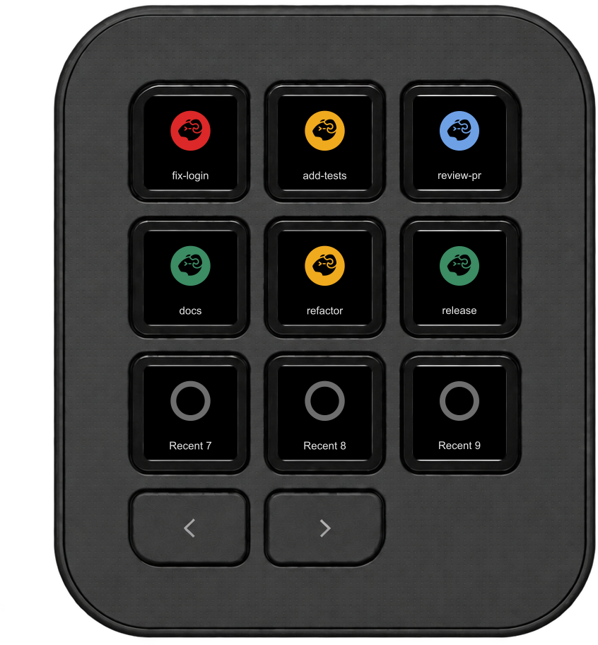
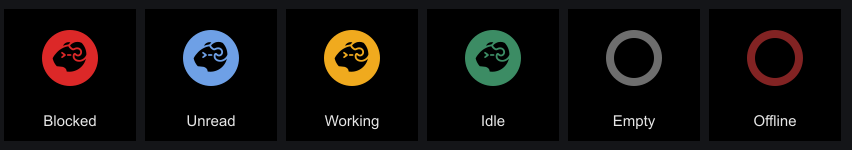
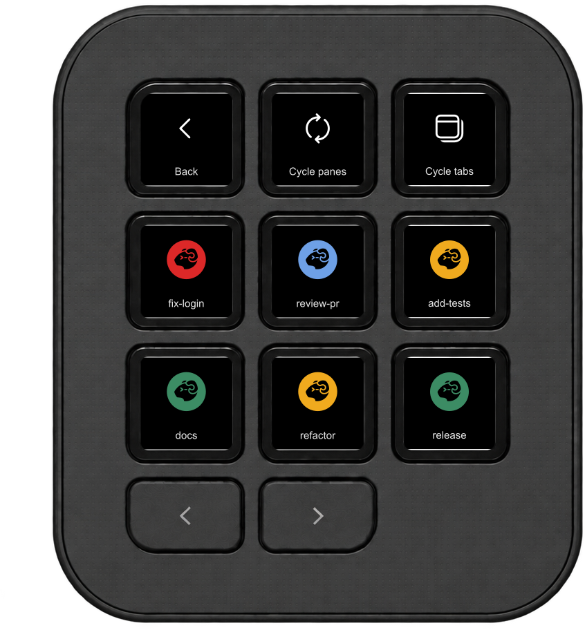
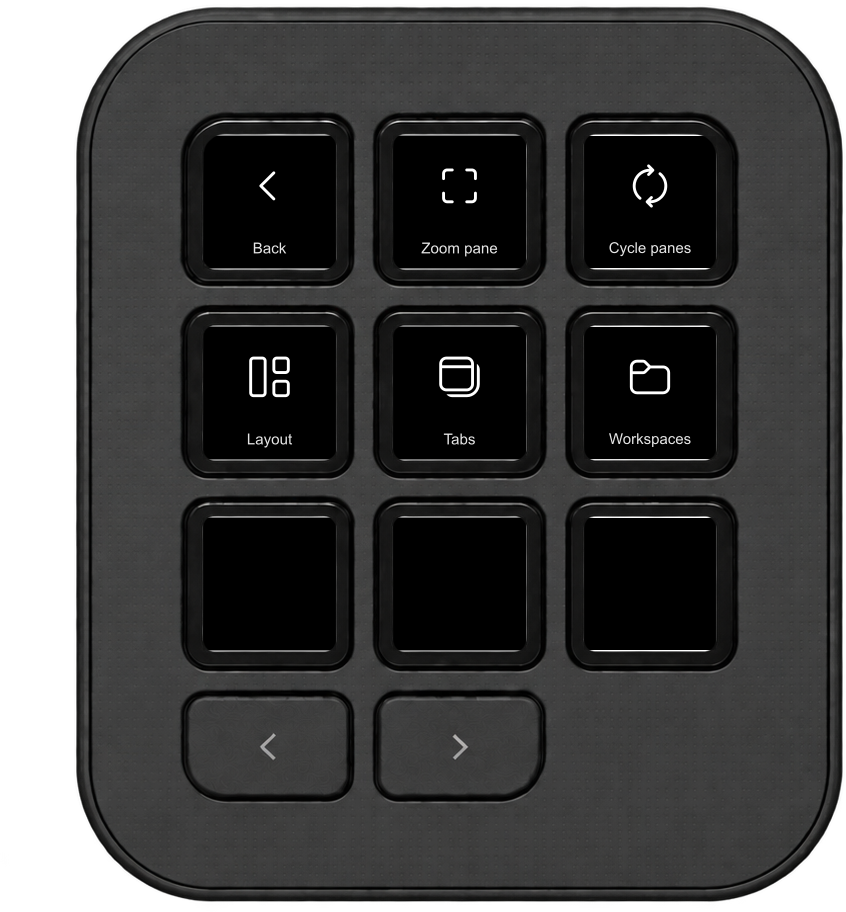
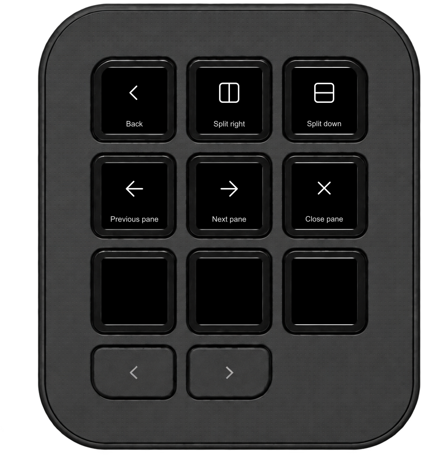

Herdr agents on the MX Creative Keypad
Live status of your Herdr agents on the Logitech MX Creative Keypad. Press a key to jump to a pane.
Download HerdrKeypad.lplug4 Source on GitHub
Diagrams drawn from the plugin's colors and icons, not photos. The repository is currently private.
Key colors

| Color | Meaning |
|---|---|
| Red | Blocked: the agent needs your input. |
| Blue | Done and not yet seen, as reported by Herdr. |
| Amber | Working. |
| Green | Idle and ready. |
| Grey / dark red | Empty slot / Herdr is not reachable. |
The Agents folder key shows the highest-priority state: blocked, unread, working, then idle.
Agents at a glance

Assign Recent Agent 1–9 directly, or open the Agents folder to browse live agents. A press focuses the pane; a long press offers a confirmation before closing it.
Shortcuts


Zoom a pane, cycle panes or tabs, split the layout, and move between workspaces. Each shortcut is also an individual action. To close the focused pane, hold Close pane, then press Close? within three seconds.
Install
- Requirements: macOS, Herdr 0.9.5, Logi Options+ with Logi Plugin Service 6.4 or later, and an MX Creative Keypad or compatible Loupedeck.
- Download
HerdrKeypad_<version>.lplug4from the latest release. Access to the private repository is currently required. - Double-click it to install it with Logi Options+, then add the actions to your Keypad.
Also for VS Code and Cursor
Use the same Keypad to monitor agents in VS Code and Cursor.